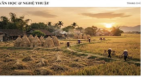

Mùa hoa gạo nở muộn bên bến sông quê
Sắc đỏ rực rỡ như những đốm lửa bập bùng giữa bầu trời tháng ba âm lịch, gợi nhắc về những hoài niệm khôn nguôi nơi bến đò xưa, nơi bóng...
"Văn chương là cầu nối giữa tâm hồn con người với con người, giữa quá khứ và hiện tại, giữa đau thương và hy vọng."


Những trang viết không chỉ là sự chiêm nghiệm về cuộc đời và con người, mà còn là hành trình đi tìm những giá trị cốt lõi của tình người, công lý và cái đẹp vĩnh cửu trong dòng chảy dập dồn của thời cuộc...
Sắc đỏ rực rỡ như những đốm lửa bập bùng giữa bầu trời tháng ba âm lịch, gợi nhắc về những hoài niệm khôn nguôi nơi bến đò xưa, nơi bóng...
Khảo luận sâu sắc về sợi chỉ đỏ xuyên suốt các tác phẩm ký sự pháp đình: nơi ranh giới mong manh giữa luật pháp và lương tri luôn được soi rọi...
Hành trình điền dã lắng nghe câu chuyện của những bậc cao niên, những nghệ nhân thầm lặng giữ giữ từng nếp sống, làn điệu dân ca và triết lý...
"Đất thở dài sau mùa rơm rạ / Khói lam chiều bảng lảng gốc đa xưa..." Chùm thơ ngũ ngôn và lục bát lắng đọng cảm xúc tri ân đấng sinh thành...

 ĐỐI THOẠI CHUYÊN ĐỀ
ĐỐI THOẠI CHUYÊN ĐỀ
Nhà văn Dương Thanh Biểu cùng khách mời luận đàm về giá trị trung thực và ngọn lửa nhân bản trong văn...
 ĐÊM THƠ & NHẠC
ĐÊM THƠ & NHẠC
Không gian âm hưởng thơ nhạc ấm cúng, tái hiện những kỷ niệm mộc mạc bên luống cày, bờ tre và tình...